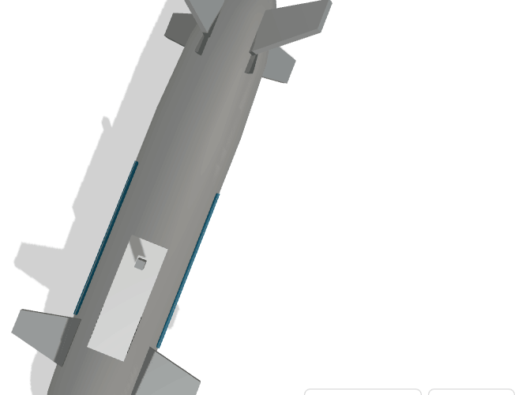
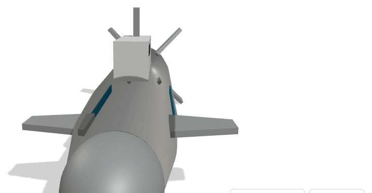
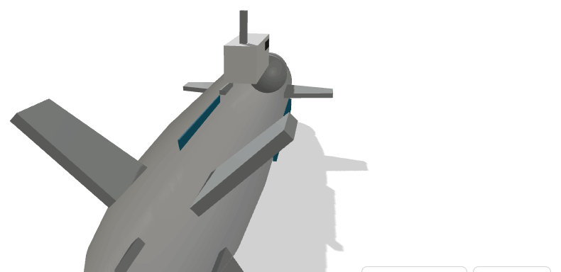

OpenDrone_AQM_S
AQUÁTICO · MILITAR · SUBMARINOSubmarino não tripulado de médio porte para vigilância submarina, protecção de infra-estrutura crítica e empenhamento sob autorização. Casco cilíndrico com propulsor em anel e governo em X, concebido para longa permanência silenciosa.




Objectivo
Detectar, cadastrar e acompanhar meios submarinos e de superfície na área de interesse nacional, proteger cabos submarinos e infra-estrutura energética, e negar aproximação hostil.
Capacidades
- Patrulha submarina silenciosa de longa duração
- Detecção e classificação acústica de contactos
- Vigilância de cabos submarinos e condutas
- Recolha de inteligência em águas contestadas
- Empenhamento sob validação humana explícita
Tecnologia
Sonar de proa e antenas de flanco; propulsão eléctrica com propulsor em anel de baixa assinatura acústica; navegação inercial com correcção batimétrica; comunicação por bóia de superfície programada.
Impacto esperado
Capacidade nacional de vigilância do fundo do mar, onde passa a maior parte do tráfego de dados intercontinental. Competência em acústica submarina, baterias e sistemas de pressão, com aplicação civil directa.
Dados de referência
